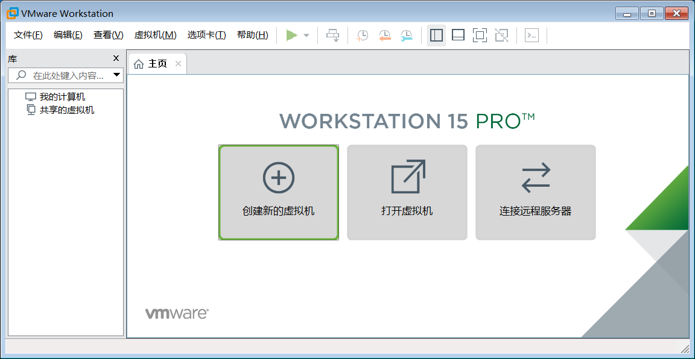

1. 给 windows 虚拟机装个 mac
众说周知,Mac 很好但也很贵,对一般大众而言,漂亮简洁高颜值,对软件开发者而言,方便省心有点贵.
- 好到什么程度?
内置大量常用的开发工具,省去了初学者安装配置环境的麻烦,版本控制工具 svn 默认已安装,web 服务器 apache 默认已安装,编程开发环境 php 默认已安装等等,例子很多就不一一列举了.
除此之外,Mac 系统不同于 Windows 系统,Mac 系统是一种类 Unix 操作系统,命令行工具很好用,相当于提前熟悉 Linux 语法了,这一点是 Windows 望尘莫及的.
- 贵到什么程度?
随随便便的普通版七八千,如果再稍微挑挑拣拣,起码一两万!

如果预算不够但又想体验一下 Mac 电脑,该怎么办?
答案很简单,直线去去线下苹果体验店啊!

哈哈,我是开玩笑的,言归正传,买不起真实的苹果笔记本也没关系,我们可以像安装普通软件那样,安装一个苹果笔记本!

下面我们将介绍一种方法,让你能够在 Windows 电脑上安装一个苹果笔记本,用起来和真的一样,只不过你我都心知肚明,那并不是真实的机器!
1.1. 知识扫盲
虚拟机是相对于真实的物理机而言的概念,是在我们当前正在使用的计算机基础上,通过软件或硬件的方式创造的新的计算机.
VMware是常用的虚拟机软件之一,物理机安装好VMware软件就可以利用该软件虚拟出任意计算机即虚拟机.
VMware 支持 Windows ,Mac 和 Linux 等常见操作系统,是名副其实的跨平台软件.
- 镜像 是一种特殊格式的文件,文件后缀名一般是
.iso,但也要例外,比如本文安装的macOS Mojave 10.14 18A391 Lazy Installer(MD5-CDD5EDA714D8BCC8E799F8272556CF3B).cdr的后缀名却是.cdr,镜像文件就是创建虚拟机的必要程序,有了它VMware软件才能创建出虚拟机.
总的来说,VMware 软件加载 xxos.iso 镜像文件创建出 xxos 虚拟机.
所以,阅读教程前请务必准备好 VMware 虚拟机以及相应的镜像文件.
1.2. 安装准备
虚拟机技术能够虚拟出任何操作系统,并不局限于 Windows 安装 Mac ,也可以安装 Linux 或者 Windows .
同理,虚拟机技术也不局限于 VMware ,也可以是 VirtualBox 或者 Parallels Desktop 等等.
为了避免选择困难症,下面以 VMware 虚拟机安装 Mac 为例,简单演示一下安装流程.
安装 Mac 操作系统需要两个前提条件:
Windows电脑已安装好VMware虚拟机.Windows电脑已下载好Mac操作系统镜像.
链接:
https://pan.baidu.com/s/1zL7-nB7ukif6nWBQ8KyOMA提取码:hrgr
如果尚未安装
VMware虚拟机,请参考上述链接进行安装,如果链接已失效,请私信我补发.
macOS Unlocker for VMware v3.0.2.zip解锁文件,是安装镜像文件的前提.macOS Mojave 10.14 18A391 Lazy Installer(MD5-CDD5EDA714D8BCC8E799F8272556CF3B).cdr镜像文件,是安装Mac操作系统的灵魂.
友情提示,百度云下载大文件限速太厉害,一定要准备好下载方案或者开通超级VIP进行下载.
1.3. 安装镜像
1.3.1. 解锁镜像
打开 VMware 软件,选择 文件-> 创建新的虚拟机 或者在主页中选择 创建新的虚拟机 .

选择已下载好的镜像文件,选择文件时默认后缀名是 .iso 而我们安装的镜像文件是 .cdr ,因此一定要选择全部文件,这样就能选中 macOS Mojave 10.14 18A391 Lazy Installer(MD5-CDD5EDA714D8BCC8E799F8272556CF3B).cdr 镜像文件了!
虽然已经加载镜像文件,但是存在警告信息: 无法检测此光盘镜像中的操作系统. 无关紧要,下一步手动指定安装的镜像文件是 Mac 10.14 操作系统即可!
当我们理所当然点击下一步时,顿时傻眼了,竟然没有 Mac os 操作系统,凭什么?!

客户机操作系统选项没有 Mac 操作系统是不是因为上一步的警告信息呢?还真不是,因为并没有解锁!
解压 macOS Unlocker for VMware v3.0.2.zip 并找到 win-install.cmd 文件,选中该文件右键以管理员身份运行!
测试时运行效果是一闪而过,应该也无碍,只要再次安装镜像时出现
Mac Os操作系统就是解锁成功.
如果没有解锁成功,打开 windows 任务管理器 并杀死 vmware 相关的全部进程,再次运行win-install.cmd 命令.

1.3.2. 继续安装
解锁成功后,再次打开 VMware 软件继续安装镜像文件,此时已经出现 Mac os 操作系统选项了,如果没有出现该选项,请返回上一步.

接下来正常安装,傻瓜式操作均采用默认配置,直接点击下一步,直到安装完成.
安装虚拟机后,有啥秘密试验都可以在虚拟机上进行操作啦,再也不担心会不小心损坏物理机了呢!
1.4. 开机体验
虚拟机安装完毕后,选择启动该虚拟机,正如物理机按开机按键一样,静静等待传说中的黑苹果!
安装一会接着提示"无法在更新服务器上找到组件",这是因为网络不通或者破解软件的原因,可以暂时忽略该错误.

设置语言,使劲往下滑直到最后,然后选择简体中文,紧接着下一步.

开始安装 macOS 操作系统,选择"继续".
同意协议并继续下一步.
不好意思,我又指了一条错误的安装道路!

下一步无路可走,只好返回,现在又回到准备安装的界面,看来我们必须准备好安装磁盘才能继续!
选择 实用工具->磁盘工具 开始准备安装磁盘.

打开的新页面左侧有两块磁盘,选择下面以 VMWare 开头的磁盘,编辑好磁盘名称(如 snowdreams1006),然后点击抹掉.
完成后关闭当前页面并返回到开始安装页面,紧接着继续下一步直到上次停留的页面.

现在已经出现了安装磁盘,选择刚刚命名的 snowdreams1006 安装磁盘,继续愉快的下一步!

虽然说还剩 16min ,实测感觉要长多了,幸运的是,接下来的安装步骤没有特别需要注意点,因此整理成动图略过.
终于安装完毕,退出安装光盘,大功告成!

并不是所有的安装版本都是最新版,当初的最新版也不一定是现在的最初版,如果追求最新操作系统,那你可以手动升级啊!

1.5. 总结
VMware 软件是一款跨平台的虚拟机操作软件,加载到有效的镜像文件就能创造出虚拟机,值得注意的是,由于创造的虚拟机是一个完整的操作系统,占用了物理机一定的资源,因此物理机性能不够强劲的话,不要创建过多的虚拟机.
一两个虚拟机足矣,不使用虚拟机时一定要及时关机,否则电脑卡到怀疑人生!
安装虚拟机的必要文件是各种各种的镜像文件,有个镜像文件就有了相应的虚拟机,一般来说,镜像文件都是网络上别人制作好的或者官方提供的,当然,如果你愿意的话,你也可以制作自己的镜像供别人下载使用.
镜像文件一般都是比较大的,小则 3g ,大则 7g ,因此下载镜像文件比较费时,不同镜像文件安装时间也不尽相同,快则 1h,慢则 3h.
至于虚拟机配置方面,一般来说采用系统默认值即可,除非你有特殊需求或者明白你正在设置的选项含义,否则不要随意更改推荐设置.
安装虚拟机中途可能会多次重启虚拟机,请耐心等待,不要中断安装操作,该完成时自会完成!
最后,感谢你的阅读,如果本文对你有所帮助,那就再好不过了,谢谢!